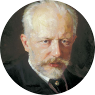

|  | Tchaikovsky
coffee lover ☕ |
Dates |
Works |
|---|---|
| 1850 | Tchaikovsky entered the prestigious Imperial School of Jurisprudence |
| 1854 | Tchaikovsky developed a lifelong passion for Italian music. |
| 1875 | composed Symphony No3 in D Major, which gained almost immediate acclaim in Russia. |